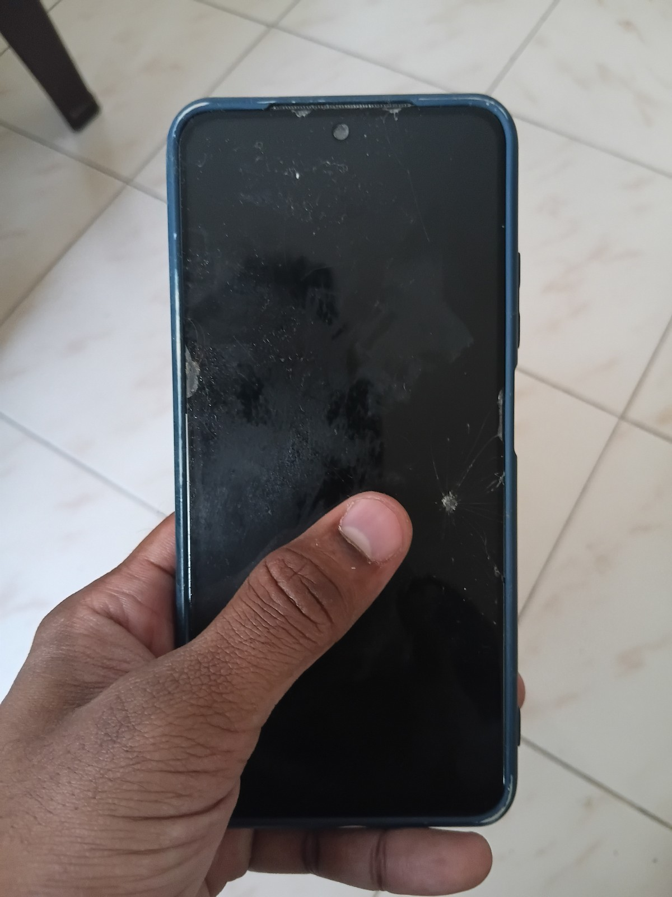
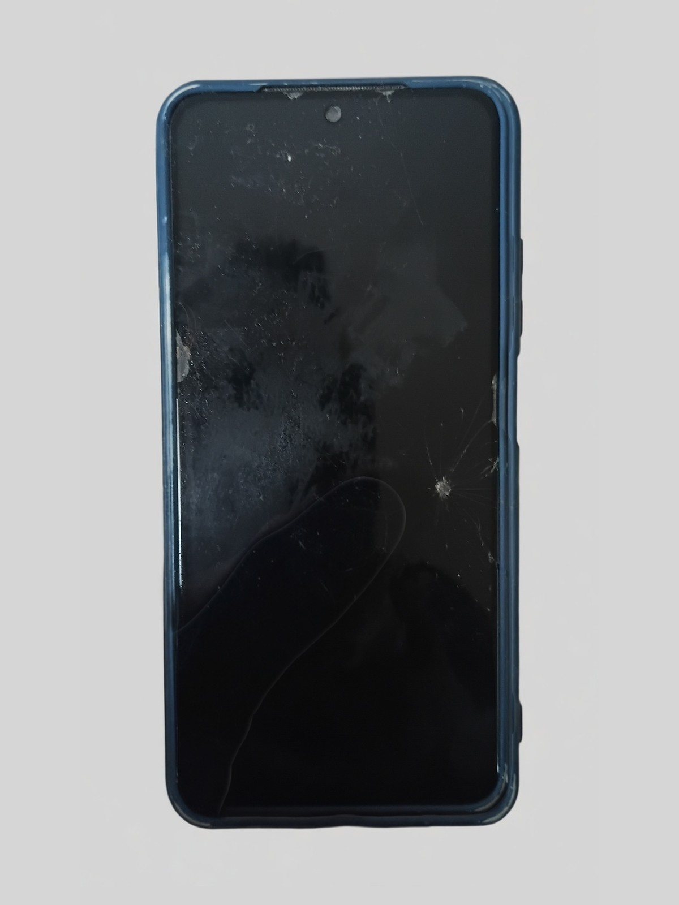
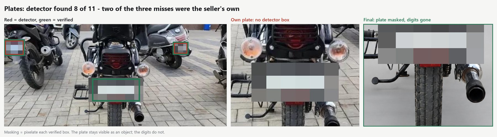
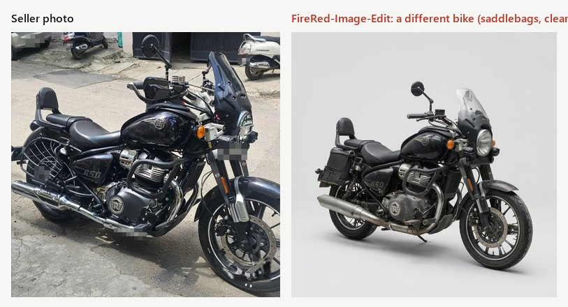
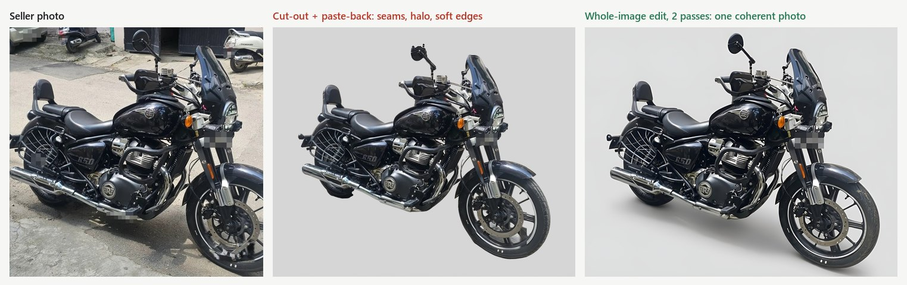
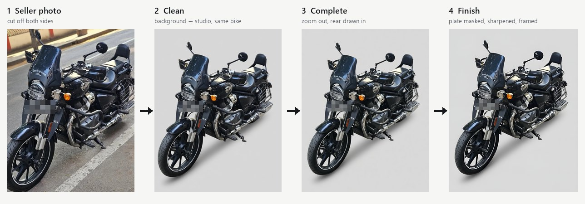
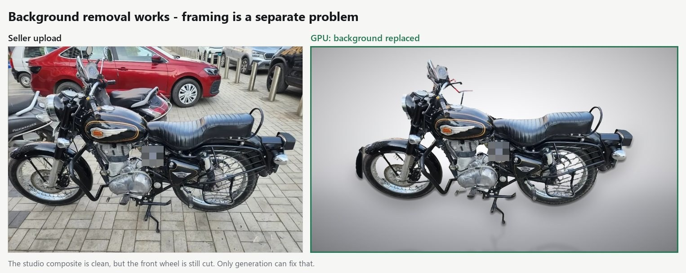
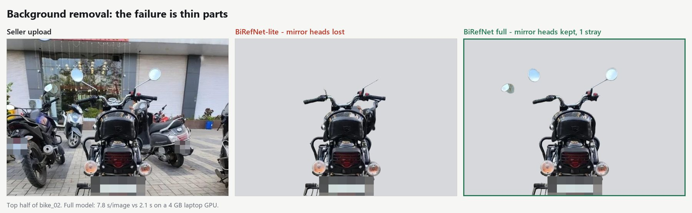
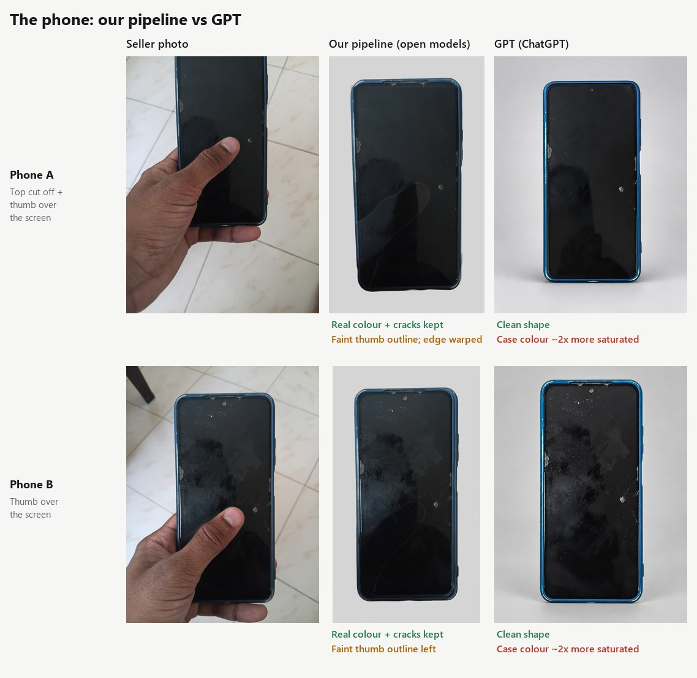

Better listing photos,without asking sellers for more.
Sellers on a C2C marketplace won't shoot studio photos, and making them try is how listings get abandoned. This is the story of a pipeline that fixes their photos after upload: faithful to the real item, private by default, and about ₹5 a photo.


Seller uploadListing-readyExecutive summary
Sellers upload photos like the left column. Open models we run ourselves turned them into the middle column, as good as GPT (right), for ₹4.87 a photo.
Plates masked in every photo. Tap any photo to enlarge; swipe each row to compare. All five bikes are in the showdown.
Cheaper than GPT, on our own GPUs
Blended cost per uploaded photo with open models on a rented GPU, against an estimate for sending the same photos to GPT. It falls towards ₹1 with known optimisations. The numbers · how they're calculated
Same quality as GPT on bikes
On every pilot bike photo, an open model produced a faithful, listing-ready result as good as GPT's. Phones need one more fix, on both sides. See them side by side
A simple decision tree picks the fix
The listing goes live at once. Each photo then gets only what it needs: nothing, a background clean-up, or missing parts drawn in. It's checked against the original before it's swapped in. The decision tree
Supply vs quality
A C2C marketplace grows on listing supply, but buyers decide on photos. You can't trade one for the other.
Every C2C marketplace lives with the same tension. Supply grows when listing is effortless: open the app, snap, post. Demand converts when listings are trustworthy, and in used goods trust is mostly visual. A buyer can't touch a second-hand bike or phone. The photo is the inspection.
It helps to picture how a listing gets made. On a C2C app, the seller does it alone, on their phone, usually in a few minutes:
Step 2 is where quality is won or lost, and it's also the step that asks the most of the seller. Anything a marketplace adds at this point (another rule, another check, another retake) is one more reason to leave before posting. So the levers a marketplace can pull during listing pull against each other:
| Lever, during listing | Photo quality | Listing supply |
|---|---|---|
| Photo tips on the upload screen | Small lift; most sellers skip them | Neutral |
| Block the upload until the photo passes a check, or ask for a reshoot | High | Falls: every blocked upload is a listing at risk |
| Send a professional photographer | Very high | Doesn't scale to one-time sellers |
| Accept any photo, fix it after the listing is posted | High, if it stays faithful | Unchanged: no extra seller effort |
So the question I set out to answer: can we raise photo quality on every listing, automatically, without changing what the seller does, at a cost per listing the business can carry?
Why sellers don't upload good photos
Bad photos aren't laziness. They're a rational response to the seller's situation, so asking harder won't fix them.
It's tempting to call bad listing photos a seller-education problem. The photos in this pilot say otherwise; every flaw has an ordinary, human reason:
| Reason | What it looks like | What it means for us |
|---|---|---|
| One-shot moment | The bike shot where it's parked: a street, a basement, a crowded lot | Nobody moves a 200 kg bike for a photo |
| No space, no backdrop | Other vehicles, pillars, floor tiles in frame | Background clean-up must be automatic |
| Phone in hand | A thumb over the screen of the phone being sold | We must handle hidden parts, not just backgrounds |
| Framing is hard | Wheels and tails cut off by the frame | Missing parts must be completed, carefully |
| Privacy isn't top of mind | Readable number plates, the seller's and the neighbours' | Masking plates is our job, every time |
| Low payoff for one sale | No reason to learn photography to sell one bike | Any extra step lowers listing completion |
So everything that follows obeys two rules: add nothing to the seller's workload, and never show a buyer something that isn't really there.
Rules are easy to write. I needed to see what real photos demanded before building anything.
The pilot: nine photos, three flaws
Two of the three flaws only need things removed. One needs something drawn, and that's where all the risk sits.
I started small and real: nine listing photos of two used motorcycles and one used phone. None was listing-ready as uploaded.
Royal Enfield Bullet 350 · 3 photos
Royal Enfield Super Meteor 650 · 4 photos
Used phone · 2 photos
All nine are the sellers' original photos. Only privacy edits were made: plates and one personal sticker pixelated, marketplace watermarks and phone date stamps removed. Tap any photo to enlarge.

Across the nine photos, three kinds of flaw kept coming up:
| Flaw | Photos | Kind of fix | Risk |
|---|---|---|---|
| Cluttered background | 9 of 9 | Remove | Low |
| Readable number plate | 5 of 7 bikes | Mask | Privacy, if one is missed |
| Item cut off or covered | 5 (3 bikes, 2 phones) | Generate what's missing | High: it must be the same item |
The first version used GPT for the hard part, and 7 of 9 photos came out listing-ready. It also taught me that privacy can't be delegated to a model: the plate detector missed the seller's own plate. But GPT is closed, priced per call, and it quietly changed the phone's case colour. That set the real question: can open models we run ourselves do the generation, faithfully?
Can open models replace GPT?
Most open models draw a convincing bike. Very few draw this bike, and in used goods that's the only thing that matters.
I tested every commercially usable open editing model I could run on a rented GPU. The bar wasn't "looks good"; it was "the buyer would receive exactly this item".

That was the test every model had to pass. Here is how each one did:
| Model | Licence | What happened | Verdict |
|---|---|---|---|
| SDXL inpainting | Open RAIL | Filled gaps with the wrong scene and hard seams | Rejected |
| FLUX.2-dev | Non-commercial | Can't be told which area to fill; can't ship anyway | Rejected |
| FireRed-Image-Edit 1.1 | Apache 2.0 | A complete bike, but a different bike | Rejected |
| Qwen-Image-Edit-2511 | Apache 2.0 | Faithful, once used the right way | Kept |
| LongCat-Image-Edit | Apache 2.0 | Faithful, and 35% faster | Kept |
| Qwen-Image-2.1 · FLUX.2 klein 9B | Research / non-commercial | Top of the leaderboard, but not shippable without a separate licence | Skipped |
Two models passed. How I first used them taught the most important lesson of the project.
The detour we had to take
Protecting the real pixels by hand made photos worse. Protecting them by measurement made them better.
My instinct was defensive: cut the bike out with BiRefNet (an open, MIT-licensed cut-out model that outlines the main object in a photo), let the generator fill only the gaps, then paste the real pixels back so nothing real could change. It sounded safe. It produced the one thing GPT never did: visible seams.

Look closely at the middle panel and four problems show up:
| What buyers would have seen | Why it happened |
|---|---|
| A light halo around the bike | The model's background bleeding through the blend |
| A doubled grab rail | The model redrew the rail slightly shifted, next to the real one |
| Dark fragments above the tank | A black scooter behind a black bike; BiRefNet's cut-out couldn't separate them |
| Soft edges, a seam across a wheel | Blurring to hide seams; the model's wheel didn't meet the real one |
BiRefNet didn't go away. It stopped being the thing that builds the final photo and became the thing that measures it: its outline of the item tells us whether the item is cut off, where to look when checking the edit, and where to crop. And on photos that need no generated pixels at all, it does the job on its own (next section).
That shift, from controlling the model to verifying its output, became the heart of the pipeline.
How the pipeline works
Understand the photo, clean it, complete it only if needed, and check it's still the same item before any buyer sees it.
The clearest way to explain it is to follow one photo: a Super Meteor shot on a street, cut off at both ends.

| Step | What happens, in plain words | Why it matters | Under the hood |
|---|---|---|---|
| 1 · Understand | Note what the item is, which way it faces, which parts are visible, where plates are, and whether anything is cut off or covered | This "description of the real item" is what every later step is held to | BiRefNet outline (does it touch the photo's edge?) + Qwen2.5-VL vision model + plate detector |
| 2 · Clean | Redraw the whole photo on a plain studio backdrop. The instruction names the view, lists the parts, and says to keep every scratch | Removes clutter without inventing anything | Qwen-Image-Edit and LongCat |
| 3 · Complete | Only if something was cut off: "zoom out" the clean photo so the model can draw the missing part | Buyers see the whole item. The only step that invents pixels | Same models, second pass |
| 4 · Check | Match the result point by point against the seller's original: same angle, same parts, same colour, nothing added | Nothing reaches a buyer on the model's word alone | Feature matching (hundreds of points) inside BiRefNet's outline of the item + rotation limit |
| 5 · Finish | Pixelate plates, sharpen, frame | Privacy and a consistent catalogue look | Plate boxes mapped from the original; 2× super-resolution; crop to BiRefNet's outline |
| 6 · Route | Publish, send to a person, or, as a last resort, ask for another photo | People only see the exceptions | Rules on the step 4 scores |
Where no image generation is needed
Most of the work isn't generative at all. Before any big model runs, a set of small, open models reads the photo, and they're light enough to run one at a time on a 4 GB laptop graphics card. For a photo that's already in frame with the item standing clear of its surroundings, this layer is the whole pipeline: cut the item out, place it on a studio backdrop, mask the plates. Nothing is drawn, so nothing about the item can change.


The full set of small models behind this layer:
| Job | What was used | Licence | What it decides |
|---|---|---|---|
| Outline the item | BiRefNet (full model; the lite version dropped thin parts like mirror heads) | MIT | Is the item cut off? Where is it? The cut-out for a backdrop swap |
| Spot other objects | Mask R-CNN (torchvision) | BSD-3 | Which cars, scooters or people crowd the item |
| Score the background | SigLIP2 image–text model | Apache 2.0 | Clean or cluttered, in one number |
| Find number plates | RT-DETRv2 plate detector, scanned in tiles | Apache 2.0 | Candidate plate boxes, including tiny ones on background vehicles |
| Confirm plates | RapidOCR text reader | Apache 2.0 | Is it really a plate, or a badge or logo? Also catches plates the detector missed |
| Mask, match, sharpen | Pixelation, SIFT point matching, Real-ESRGAN | Open source · BSD-3 | Privacy, the same-item check, a crisp final photo |
Is the check good enough to trust?
Not on its own, and I'd rather say that here than discover it in production. I first asked a vision model to grade the edits; it confidently repeated my own example words back as "findings". Point matching is duller and more honest. Here's what it actually scored (matched points, across the pilot's attempts):
| Photo | Wrong result | Its score | Faithful result | Its score | Did the check separate them? |
|---|---|---|---|---|---|
| Meteor · side | FireRed: different bike | ≤ 23 | LongCat | 646–1,119 | Clearly |
| Bullet · rear | Qwen: added a 2nd exhaust | ≤ 6 | LongCat | 54–195 | Clearly |
| Meteor · front ¾ | LongCat near-copy that kept the watermark | 523 | Qwen | 237–773 | No it rewarded the copy |
| Bullet · side | — | — | Qwen (scooter removed) | 17–30 | Unsure good results score low on busy photos |
So the check reliably catches a different item, the failure that hurts trust most. It doesn't yet catch leftover watermarks, and it can't vouch for photos where most of the original was clutter. In the pilot, I confirmed every final pick by eye. In production those two blind spots route to a person, and a watermark detector plus a trained edit judge (section 10) shrink that queue.
With the method settled, the fair test was head-to-head against GPT, on bikes and on the phone.
The showdown: bikes and phones
On bikes, open models matched GPT on every photo, but no single open model won all five, so we run two. On phones, both sides still have a flaw.
The motorcycles
Bullet · side
Front cut off, scooter behindBullet · rear
Small, crowdedMeteor · front ¾
Cut off both sides and bottomMeteor · front
Low-res basement photoMeteor · side
Cut off both endsEvery open-model result then goes through the same finish: plates pixelated, 2× sharpening with Real-ESRGAN, cropped to the item. Same photo and same instruction for every model. Tap any image to see it full size.
| Photo | Challenge | Qwen | LongCat | GPT | Best open model |
|---|---|---|---|---|---|
| Bullet · side | Front cut off, scooter behind | Same view, every part | Good, slightly angled | Good | Qwen |
| Bullet · rear | Small, crowded | Added a 2nd exhaust | Faithful | Good | LongCat |
| Meteor · front ¾ | Cut off both sides | Complete, same angle | Bike turned side-on | Good | Qwen |
| Meteor · front | Low-res basement photo | Complete | Good, bike small | Good | Qwen |
| Meteor · side | Cut off both sides | Good | Good, nicer light | Good | Tie |
The phones
Phones are where fidelity really shows. Both photos had a thumb over the screen, and one was cut off at the top. A used-phone buyer looks hardest at exactly what the thumb hides: cracks, scratches, the true colour of the case. Phones took a simpler route than bikes (cut the phone out, then fill only the area under the thumb), because a phone's straight edges make a clean cut-out easy.

| Phone | Problem | Our pipeline | GPT | Shippable? |
|---|---|---|---|---|
| Phone A | Top cut off + thumb | Colour and cracks kept; faint thumb outline, slightly warped edge | Clean shape; case colour ~2× more saturated | Neither, yet |
| Phone B | Thumb over the screen | Colour and cracks kept; faint thumb outline | Clean shape; case colour ~2× more saturated | Neither, yet |
I'd take our failure over GPT's. A faint outline is visible, detectable and fixable: run the whole-image bike method on phones, which never cuts anything out. A colour shift misrepresents the item while looking perfectly plausible. Until the fix lands, phone photos with a covered screen go to review.
The verdict: each open model has one blind spot (rear views for Qwen, ¾ angles for LongCat) and they don't overlap, so the pipeline runs both and lets the check choose. GPT stays as a fallback for photos both fail.
Here's what that looks like from a single photo's point of view.
A photo's path, in plain words
The listing goes live instantly. Photos improve in the background, only where needed, and only if we can show it's still the seller's own item.
The seller takes the photo, and posts
The camera shows a gentle hint: "fit the whole bike in the frame". It's a hint, never a block. The listing goes live straight away with the original photos.
Is the photo usable at all?
Blurry, too dark, or not the item being sold?
What does it need?
Is it still exactly the seller's item?
Compared with the original: same item, same angle, same parts, same colour, nothing left over.
The seller stays in control
A notification: "We polished your photos". The seller can keep the originals with one tap. No approval is needed to go live.
| Design choice | Why |
|---|---|
| Go live first, improve later | A fix takes 1–5 minutes of GPU time. The seller should never wait for it |
| Hints, not blocks | Every blocked upload risks a lost listing. Guidance is free; friction isn't |
| Fix only what's broken | Keeps cost near zero on good photos; less generated means less can go wrong |
| Original one tap away for buyers | The strongest answer to "did AI change my item?" is letting buyers check |
| Two models before a person | Their failures don't overlap, so people see only true exceptions |
Going live first has a second benefit: fixes can wait in a queue. That matters a lot for the economics.
Open models vs GPT: the cost
Running both open models costs ₹4.87 per uploaded photo, less than GPT's ₹5.1–7.5, with bike quality on par. Running LongCat alone costs less than half of that.
One table says most of it. Every open-model number is seconds of GPU time × ₹0.0423, the price of one second on the A100 we rented ($1.59 an hour × ₹95.8 per dollar ÷ 3,600). GPT's price is an estimate for one medium-quality edit. The appendix shows every calculation step by step.
| Building block | GPU time | Cost | Where the time comes from |
|---|---|---|---|
| Checks on every photo: outline, plates, cut-off test, parts list | 10 s | ₹0.42 | 10 × ₹0.0423. An estimate: these small models weren't timed on the A100 |
| One Qwen edit | 85.3 s | ₹3.61 | Median of 24 timed edits (82–87 s) |
| One LongCat edit | 55.0 s | ₹2.33 | Median of 24 timed edits (55–56 s) |
| One GPT edit | — | ₹7.86–11.79 | OpenAI's $0.041 medium image (₹3.93) × 2–3 for sending a photo in. An estimate |
A photo that's already good only pays for the checks. A busy background adds one edit per model. A cut-off photo adds two (clean, then zoom out).
| Qwen only | LongCat only | Both, best one kept | GPT | |
|---|---|---|---|---|
| Photo already good: checks only, no edit | ₹0.42 | ₹0.42 | ₹0.42 | ₹0.42 |
| Photo with a busy background: checks + one clean-up | ₹4.03 | ₹2.75 | ₹6.36 | ₹8.28–12.21 estimate |
| Photo cut off or covered: checks + clean-up + completion | ₹7.64 | ₹5.08 | ₹12.29 | ₹8.28–12.21 estimate |
| Average per uploaded photo (mix below) | ₹3.13 | ₹2.17 | ₹4.87 | ₹5.14–7.50 |
| Average per listing (5 photos) | ₹16 | ₹11 | ₹24 | ₹26–37 |
| Quality on the 5 pilot bike photos | Best on 3; added an exhaust on 1 | Best on 1; turned 1 bike side-on | Faithful on 5 of 5 | Good on 5 of 5 |
| Time on the GPU per edit | 85 s | 55 s | 140 s | Not measured |
| Photos leave our systems? | No | No | No | Yes |
Two things stand out. Running both models is the safe choice today, because each covers the other's blind spot. And on a cut-off photo, running both (₹12.29) actually costs more than GPT (₹8.28–12.21). The open models win on average only because most photos need less than the full treatment, so the mix matters.
The mix: not every photo needs AI
The shares below are assumptions, not measurements. They assume a gentle "fit the whole item in the frame" hint on the camera screen.
Against GPT per uploaded photo: optimistic ₹3.09 vs ₹3.57–5.14, base case ₹4.87 vs ₹5.14–7.50, pessimistic ₹6.95 vs ₹6.71–9.86. Both open models win in the first two. In the pessimistic mix, where many photos are cut off, GPT at its lowest price is slightly cheaper. LongCat alone stays cheapest in every mix.
At marketplace scale (base case)
| Listings a month | Both open models | LongCat only | GPT |
|---|---|---|---|
| 10,000 | ₹2.4 lakh | ₹1.1 lakh | ₹2.6–3.7 lakh |
| 1,00,000 | ₹24 lakh | ₹11 lakh | ₹26–37 lakh |
Human review time sits on top and is not yet measured; a review rate from nine hand-picked hard photos would mislead.
₹24 a listing works. But it's the price of a first version, not a finished one.
Cheaper and better: fine-tuning, buy vs rent
Four known levers take the cost from ₹4.87 to under ₹1 a photo. Their order matters: optimise the software first, then decide whether to buy hardware.
The cost ladder
Each rung builds on the one above, on the base-case mix. Everything below the first rung is modelled, not yet measured.
Fine-tuning Qwen on real listing photos
Qwen's failures were specific and repeatable: an extra exhaust on a rear view, a slight angle drift. That's exactly what a small fine-tune (a LoRA adapter, not a new model) fixes well. It's also where quality can go past GPT's, because a general-purpose model is never tuned on one marketplace's own photos.
| Question | Answer |
|---|---|
| What to train on | Pairs of seller photo → human-approved listing photo. A review step produces these anyway, at no extra cost. Not GPT outputs: building on another provider's outputs is risky, and their terms restrict it |
| How much data | ~1,000–2,000 approved pairs to start, across bikes, scooters and phones estimate |
| Compute cost | ~8–12 A100-hours per training run ≈ ₹1,200–1,800 estimate |
| What it should fix | Added and missing parts, angle drift, inconsistent backdrop and shadow. Fewer retries also make "stop at the first pass" cheaper |
| The risk | Training on polished photos can teach the model to make items look new. Every new version must pass a held-out set of heavily worn items and the same-item check before it ships |
| Related quick win | A published 4-step distilled version of this exact Qwen model claims ~10× faster editing. It's untested on our photos and must clear the same bar |
Buy an A100 or keep renting?
Renting is right while volume is uncertain. The real question is when owning pays, and the answer hangs on one number: how busy the GPU is kept. Because listings go live first and photos are fixed from a queue, we can keep GPUs far busier than a real-time feature could.
| Input | Value | Source |
|---|---|---|
| Rent | ₹152 per hour | What we paid ($1.59/h). Indian clouds list ₹187–189/h |
| Buy, per GPU | ₹16 lakh (₹12–20 lakh) | A100 80GB ~$10–13k new globally, +25–30% landed in India, plus a share of the server estimate |
| Running cost when owned | ≈ ₹10 per busy hour | Power, cooling, colocation, ops share assumption |
| Useful life | 3 years | Straight-line assumption |
| How busy the GPU is | Breakeven | ₹ per photo, owned | ₹ per photo, rented | Call |
|---|---|---|---|---|
| 100% (theoretical) | 15 months | ₹2.27 | ₹4.87 | Buy |
| 70% (background queue) | 22 months | ₹3.10 | ₹4.87 | Buy the base load |
| 40% (follows daily traffic) | 38 months, past its life | ₹5.19 | ₹4.87 | Rent |
How many GPUs? At the base case, a photo takes ~115 GPU-seconds today. 10,000 listings a month is ~1,600 GPU-hours, about 3 GPUs at 70% busy; 1 lakh listings is ~31 GPUs. The first rung of the ladder alone cuts that by about 40%, and the second by about 3.7× in total.
My call: don't buy first. Optimise the software (first pass, 4-step model, fine-tune) on rented GPUs, then measure real volume and utilisation. After that, buy only the steady base load the queue can keep 70% busy, and rent for peaks. Buying before optimising would size the fleet for a cost structure that's about to shrink.
Other improvements worth testing
| Improvement | What it fixes | Effect |
|---|---|---|
| Use the seller's other photos as reference | A listing has ~5 photos; the part cut off in one is often visible in another. Guessing becomes copying | Fidelity on completed parts |
| Send more simple scenes to the BiRefNet cut-out | A plain wall or a phone on a table doesn't need a 20B model; the cost model above sends every busy background to one | Cost on the "busy background" share |
| Watermark and text detector | The check's known blind spot | Fewer human reviews |
| Trained edit judge (EditReward, MIT) | Scores quality, not just sameness | Automatic picking; fewer reviews |
| Whole-image method for phones | The faint thumb outline | Phones become shippable |
| Cheaper GPU class (L40S-type) with 8-bit weights | A100s are more than these models need | Cost untested |
None of this matters unless the pilot's result holds beyond nine photos. So what does it actually show?
What the pilot shows, and what it doesn't
Nine photos show the approach is feasible and affordable. They don't show it changes buyer behaviour; that needs a proper test on real traffic.
| Claim | Shown by this pilot? | What would confirm it |
|---|---|---|
| Open, commercially licensed models can fix these photos faithfully | Yes, 5 of 5 bikes | A larger held-out test set per category |
| It's affordable per listing | Yes, from real GPU bills | The real share of photos that need each fix |
| It works on phones | Not yet | The whole-image method applied to phones, re-tested |
| It runs end to end with no one in the loop | Partly | In the pilot, I wrote each photo's parts description with the vision model's help and confirmed picks by eye. Automating both, and measuring the gap, is the next step |
| Checks can replace people | Partly | How often a person has to step in, on a large sample |
| Better photos lift buyer contacts and sales | Not tested | A controlled comparison of listings with and without fixed photos |
Whatever the model or the price, a handful of principles hold.
Principles for shipping this
The model was the easy part. Trust rules, measurement, licences and seller friction decide whether this ships.
Fidelity beats beauty
In used goods, a gorgeous photo of a slightly different item is a liability. Hold every image to "same item, same angle", and measure it.
Don't tax the seller
Supply is the marketplace's oxygen. Put the work on the platform, not the person listing, and let them opt out in one tap.
Verify, don't trust
Let models do the creative work and plain, measurable checks decide what ships. Know where the checks are blind, and route those cases to people.
Read the licence before the leaderboard
The top-scoring open editor couldn't ship in a commercial product. Apache and MIT alternatives could.
Optimise, then buy
Software levers cut the cost several times over. Size the hardware after that, not before.
Show the original
Label AI-enhanced photos and keep the original one tap away. Transparency is cheaper than disputes.
Appendix: how every number is calculated
Every cost in this blog comes from the inputs in step 1 and the arithmetic below. Items marked estimate or assumption are not measured.
1 · Inputs
| Input | Value | Source |
|---|---|---|
| GPU rent | $1.59 per hour | RunPod A100 SXM 80GB (secure cloud), the price shown when the pod was deployed |
| Exchange rate | ₹95.8 per $ | Wise, Sept 2026 (₹95.78 that day) |
| Qwen, one edit | 85.25 s | Median of 24 timed edits in the pilot logs (range 82.1–86.6 s) |
| LongCat, one edit | 55.0 s | Median of 24 timed edits (range 54.8–56.2 s) |
| Checks on every photo | 10 s | Outline, plate detection, cut-off test and parts list. estimate: not timed on the A100 |
| Same-item check and finish | ≈ ₹0 | Runs on the CPU in under 30 s |
| GPT medium image, output only | $0.041 | OpenAI API price for a medium 1536×1024 image, checked Sept 2026 |
| Extra cost of an edit (photo sent in) | × 2 to 3 | Third-party guides; OpenAI doesn't publish the input-photo token count. estimate |
| Photos per listing | 5 | assumption |
| Photo mix (good / busy / cut off) | 40 / 45 / 15 % | Base case. Optimistic 60/35/5, pessimistic 20/50/30. assumption |
2 · Price of one GPU second
| Step | Calculation | Result |
|---|---|---|
| Rent in rupees per hour | $1.59 × ₹95.8 | ₹152.32 / hour |
| Rupees per GPU second | ₹152.32 ÷ 3,600 | ₹0.0423 / second |
3 · Building blocks
| Block | Calculation | Result |
|---|---|---|
| Checks on every photo | 10 s × ₹0.0423 | ₹0.42 |
| One Qwen edit | 85.25 s × ₹0.0423 | ₹3.61 |
| One LongCat edit | 55.0 s × ₹0.0423 | ₹2.33 |
| One GPT edit, low | $0.041 × ₹95.8 = ₹3.93; × 2 | ₹7.86 |
| One GPT edit, high | ₹3.93 × 3 | ₹11.79 |
4 · Cost of each kind of photo
Busy background = checks + one edit. Cut off = checks + two edits (clean, then zoom out). "Both" runs Qwen and LongCat and keeps the better result, so it pays for both. GPT is assumed to fix a photo in one edit.
| Option | Already good | Busy background | Cut off or covered |
|---|---|---|---|
| Qwen only | ₹0.42 | 0.42 + 3.61 = ₹4.03 | 0.42 + 2 × 3.61 = ₹7.64 |
| LongCat only | ₹0.42 | 0.42 + 2.33 = ₹2.75 | 0.42 + 2 × 2.33 = ₹5.08 |
| Both, best kept | ₹0.42 | 0.42 + 3.61 + 2.33 = ₹6.36 | 0.42 + 2 × (3.61 + 2.33) = ₹12.29 |
| GPT | ₹0.42 | 0.42 + (7.86 to 11.79) = ₹8.28–12.21 | same as busy: ₹8.28–12.21 |
5 · Average per uploaded photo
Average = (share already good × its cost) + (share busy × its cost) + (share cut off × its cost). Base case, both models:
= ₹0.17 + ₹2.86 + ₹1.84 = ₹4.87
| Option | Optimistic | Base case | Pessimistic |
|---|---|---|---|
| Qwen only | ₹2.05 | ₹3.13 | ₹4.39 |
| LongCat only | ₹1.47 | ₹2.17 | ₹2.98 |
| Both, best kept | ₹3.09 | ₹4.87 | ₹6.95 |
| GPT (0.42 + share needing a fix × edit price) | ₹3.57–5.14 | ₹5.14–7.50 | ₹6.71–9.86 |
6 · Per listing and at scale
| Figure | Calculation | Result |
|---|---|---|
| Per listing, both models | ₹4.87 × 5 photos | ₹24 |
| Per listing, GPT | ₹5.14–7.50 × 5 | ₹26–37 |
| 10,000 listings, both models | 10,000 × 5 × ₹4.87 | ₹2.4 lakh |
| 10,000 listings, LongCat only | 10,000 × 5 × ₹2.17 | ₹1.1 lakh |
| 10,000 listings, GPT | 10,000 × 5 × ₹5.14–7.50 | ₹2.6–3.7 lakh |
| 1,00,000 listings | ten times the three rows above | ₹24 · ₹11 · ₹26–37 lakh |
7 · The cost ladder (base case)
| Rung | Calculation | Result |
|---|---|---|
| Stop at the first pass | Each edit step = LongCat ₹2.33 + 30% × Qwen ₹3.61 = ₹3.41. Busy 0.42 + 3.41 = ₹3.83; cut off 0.42 + 2 × 3.41 = ₹7.24. Then 0.40 × 0.42 + 0.45 × 3.83 + 0.15 × 7.24 | ₹2.98 |
| 4-step Qwen | Qwen at ~12 s = ₹0.51 estimate, plus LongCat on 30% = ₹0.70, so ₹1.21 per edit step. Busy ₹1.63; cut off ₹2.84. Same averaging | ₹1.33 |
| Own the GPUs, 70% busy | ₹1.33 × (owned cost per hour ₹96.98 ÷ rent ₹152.32) | ₹0.85 |
8 · Buy vs rent
| Figure | Calculation | Result |
|---|---|---|
| Owned cost per busy hour | ₹16,00,000 ÷ (26,280 hours in 3 years × share busy) + ₹10 running | ₹70.88 at 100% · ₹96.98 at 70% · ₹162.21 at 40% |
| Busy hours to break even | ₹16,00,000 ÷ (₹152.32 rent − ₹10 running) | 11,243 hours |
| Months to break even | 11,243 ÷ (730 hours a month × share busy) | 15.4 · 22.0 · 38.5 months |
| ₹ per photo when owned | ₹4.87 × owned cost per hour ÷ ₹152.32 | ₹2.27 · ₹3.10 · ₹5.19 |
| GPU seconds per photo today | 0.40 × 10 + 0.45 × (10 + 85.25 + 55) + 0.15 × (10 + 2 × 140.25) | 115 s |
| GPUs for 10,000 listings a month | 50,000 photos × 115 s ÷ 3,600 = 1,600 GPU-hours; ÷ (730 × 70%) | 3.1 GPUs |
Appendix B: models and settings
models · settings · sources · tap to open
| Role | Model | Licence |
|---|---|---|
| Photo editing | Qwen-Image-Edit-2511 (20B) · LongCat-Image-Edit | Apache 2.0 |
| Understanding, plates | Qwen2.5-VL-7B | Apache 2.0 |
| Item outline, frame check, backdrop swap | BiRefNet (full) | MIT |
| Other objects · clutter score | Mask R-CNN v2 · SigLIP2 base | BSD-3 · Apache 2.0 |
| Plate detection · plate confirmation | RT-DETRv2 · RapidOCR | Apache 2.0 |
| Phone cut-out and fill | BiRefNet · SAM 2.1 · Qwen-Image-Edit | MIT · Apache 2.0 |
| Sharpening | Real-ESRGAN x2plus | BSD-3 |
| Next critic candidates | EditReward · Qwen3-VL-30B-A3B · DINOv2 | MIT · Apache 2.0 |
Settings and timings
Qwen: 40 steps, true CFG 4.0, 82–86 s per image. LongCat: 50 steps, guidance 4.5, ~55 s. About 1 MP output, bf16, one A100 80GB. The pilot ran four attempts per pass to study variance; the cost model assumes one attempt per model.
The same-item check
SIFT features matched between the seller's original (item area only) and the output, fitted with a RANSAC similarity transform; rotation must stay under 6°. The score is the number of matched points. Plate boxes are hand-verified on the original and mapped through the same transform.
Formulas
All cost formulas and worked numbers are in Appendix A.
Price sources (Sept 2026)
JarvisLabs: A100 price guide · E2E Networks: A100 80GB in India · Cyfuture: A100 price in India · lightx2v: Qwen-Image-Edit-2511-Lightning